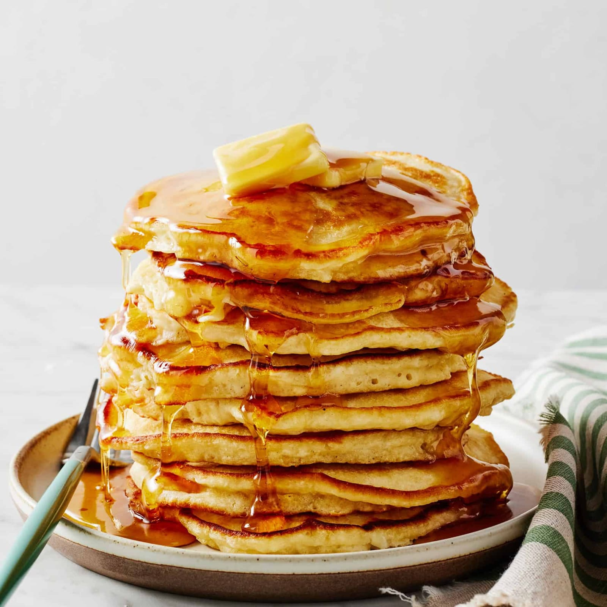

Pancake
⭐⭐⭐⭐⭐ 4.8 Rating | ⏱ 25 Minutes | 🍽 4 Servings
Category
Breakfast
Difficulty
Easy
Calories
220 kcal
Cooking Style
Pan Cooked
📋 Ingredients
- 1 Cup All-purpose Flour
- 2 tbsp Sugar
- 2 tsp Baking Powder
- ¼ tsp Salt
- 1 Egg
- 1 Cup Milk
- 2 tbsp Melted Butter
- 1 tsp Vanilla Essence
- Butter or Oil for Cooking
🍳 Required Utensils
- Mixing Bowl
- Whisk
- Measuring Cups
- Non-stick Pan
- Spatula
- Serving Plate
📖 Introduction
Pancakes are soft, fluffy and delicious breakfast treats enjoyed all over the world. They are made from a simple batter of flour, milk and eggs and are commonly served with butter, honey, maple syrup or fresh fruits.
🔬 Principle
Baking powder creates air bubbles in the batter during cooking, making the pancakes light and fluffy. Cooking on medium heat ensures even browning without burning.
👨🍳 Procedure
- Mix flour, sugar, baking powder and salt.
- In another bowl beat egg, milk and vanilla.
- Add melted butter.
- Pour wet ingredients into dry ingredients.
- Mix gently until smooth.
- Heat a non-stick pan.
- Lightly grease with butter.
- Pour one ladle of batter.
- Cook for about 2 minutes.
- Flip when bubbles appear on top.
- Cook another 1–2 minutes.
- Repeat for remaining batter.
- Serve hot with your favorite toppings.
⚠ Precautions
- Do not overmix the batter.
- Cook on medium heat.
- Flip only once.
- Use a non-stick pan.
- Grease the pan lightly.
💡 Chef Tips
- Add chocolate chips for extra flavor.
- Top with bananas or strawberries.
- Use honey or maple syrup.
- Serve immediately while warm.
🥗 Nutrition Facts
| Nutrient | Amount |
|---|---|
| Calories | 220 kcal |
| Protein | 6 g |
| Carbohydrates | 30 g |
| Fat | 8 g |
🍽 Serving Suggestions
- Maple Syrup
- Honey
- Fresh Fruits
- Whipped Cream
- Chocolate Syrup
🌿 Health Benefits
- Provides instant energy.
- Good source of carbohydrates.
- Contains protein from eggs and milk.
- Can be made healthier using whole wheat flour.
- Perfect breakfast for children and adults.
✅ Result
The prepared Pancakes should be soft, fluffy, golden brown and delicious. They should have a light texture and taste best when served warm with butter, honey, maple syrup or fresh fruits.
🎥 Watch Recipe Video
Learn the complete recipe by watching the step-by-step video.
▶ Watch on YouTube